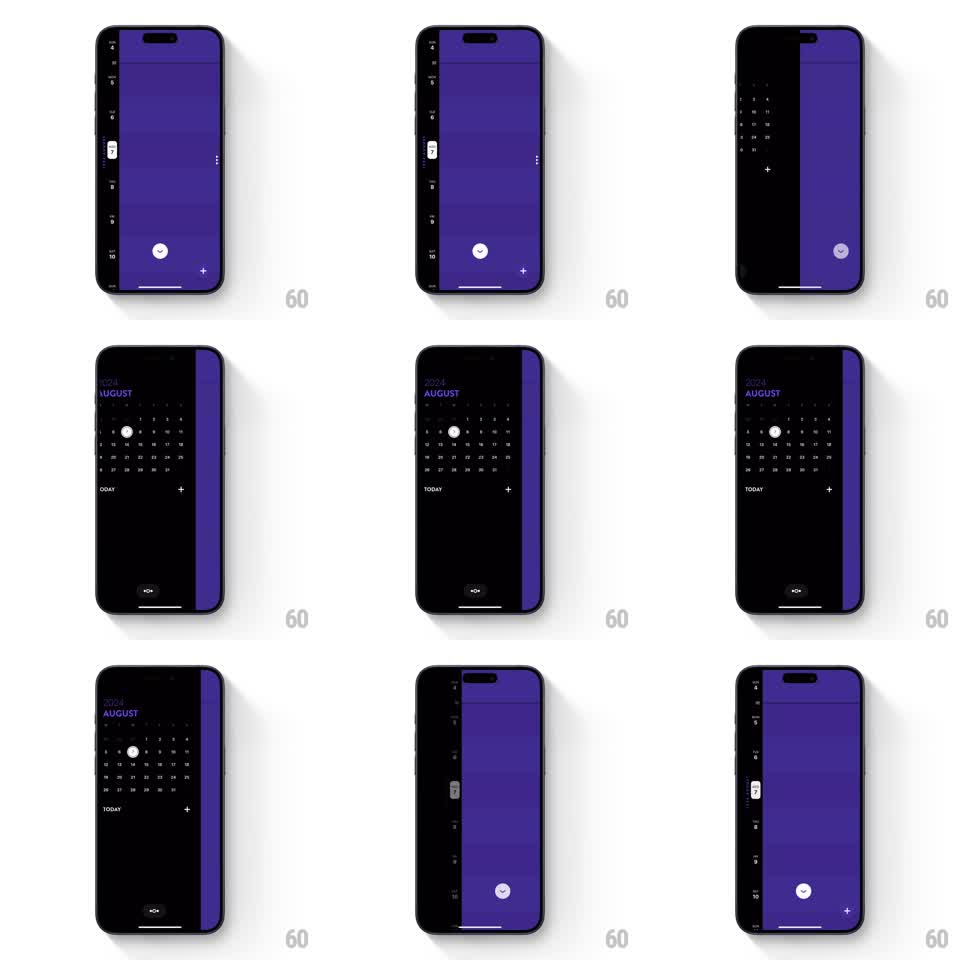

Media
Frame-by-frame

Rebuild this interaction 1:1: Timepage's view transition - a fluid swipe morphs between the monthly calendar grid and the vertical weekly timeline, with events flowing between layouts.

Rebuild this interaction 1:1: Timepage's view transition - a fluid swipe morphs between the monthly calendar grid and the vertical weekly timeline, with events flowing between layouts. Note: the pipeline's first-pass footage for this slug was a wrong video (Rain Alerts); the prompt is written for the corrected per-shot footage (Gumlet poster-asset video). ## Integration Integration: stack-agnostic spec - springs given as stiffness/damping, timed motions as duration + curve; map every value to your framework and animation library of choice. ## Scene Two calendar layouts: a monthly grid (day cells, event dots) and a vertical weekly timeline (hour rows, event blocks). A horizontal or vertical swipe transitions between them; the current day/week stays the anchor while the layout reflows around it. ## Motion spec Pattern: shared-element layout morph between calendar views. - The swipe is gesture-driven 1:1: the month grid slides and scales down slightly (0.94) while the timeline slides in, both moving together under the finger. - The anchor day cell expands from its grid position into the timeline's day header - a shared element that translates, scales, and crossfades content (dots become blocks) mid-flight. - Event indicators morph: dots on the grid stretch into the timeline's event blocks (height grows with the transition progress), preserving color and position lineage. - Off-anchor rows/cells fade and slide with a stagger radiating from the anchor (30ms per row). - Release past 50% (or with fling velocity): the transition completes with a spring (stiffness ~280, damping ~28); below threshold it springs back, fully reversible. - The header date text crossfades and slides in the swipe direction (150ms lag behind the layout). ## Calibration - Reversibility is the core: at every mid-point the composition must be a coherent hybrid - half-morphed dots/blocks, not two stacked screens. - The anchor day never jumps; every other element choreographs around its continuity. ## Reduced motion Crossfade between views; anchor day stays fixed. ## Don't miss - Event colors survive the morph exactly - a dot and its block are the same item. - The swipe works from anywhere on the calendar body, not just an edge.